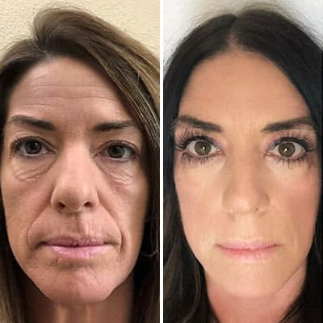
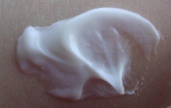
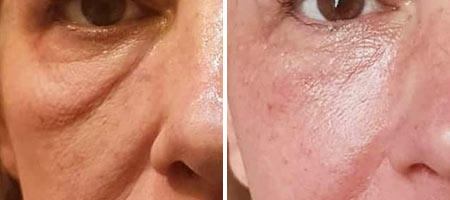
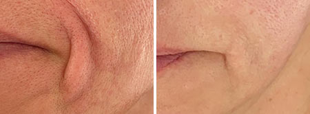

¡Rejuvenece 12 años en 2 semanas, de forma natural!
Sin Botox ni cirugía plástica

Los estándares de belleza actuales hacen que las mujeres terminen en un callejón sin salida. Las mujeres están en la búsqueda de la juventud eterna y listas para hacer cualquier cosa, incluyendo someterse a cirugías plásticas. Ponen en riesgo su salud, sienten dolor y gastan grandes sumas de dinero de forma voluntaria, a pesar de que pueden usar otros métodos más efectivos.
Aquí vamos a estudiar los métodos alternativos. Irene Márquez, quien sabe exactamente cómo verse 12 años más joven que las mujeres de su misma edad , compartió su historia con nosotros.
"Cuando era una niña todavía, me di cuenta de lo que es la belleza y lo importante que es para las mujeres. Mi madre fue víctima de una cirugía plástica fallida y vi con mis propios ojos el impacto que eso tuvo en su vida. Ya no era tan bella como antes y sus esfuerzos por recuperar su belleza fueron en vano. Su rostro quedó destrozado, lo que afectó su relación con mi padre. En ese momento empecé a soñar con convertirme en cosmetóloga para poder ayudar a las mujeres a dejar de sufrir por las imperfecciones y seguir siendo bellas hasta ser mujeres mayores”.
Muchos años pasaron desde ese entonces y mi sueño se hizo realidad. No solo me convertí en cosmetólogo, sino también en la dueña de un salón de belleza. Todos los días ayudo a las mujeres a verse más bellas y a ser más felices, de forma natural.
Cuando era una muchacha, la consigna que tenía en mente era "¡Rejuvenecimiento natural sin inyecciones ni cirugía!" .
En la industria de la belleza las cosas cambian rápidamente. Es por ello que siempre estoy al tanto de todas las innovaciones. Participo en congresos de medicina, pruebas de productos, y además leo sobre investigaciones científicas. Todo esto me ayuda a mantenerme a la vanguardia al lanzar nuevos productos. He comprobado que este es un método efectivo ya que dentro de mi lista de clientes puedes encontrar estrellas de Hollywood, quienes deben mantener una apariencia joven como parte de su trabajo.
Estaba muy contenta con mi trabajo hasta que un día conocí a otra víctima de una mala cirugía plástica. Fue una mujer que me pidió que la ayudara a lidiar con las consecuencias de la cirugía. Hablaba con lágrimas en los ojos.
Este caso me llevó de vuelta al pasado y me recordó la historia de mi madre. Me di cuenta de que las mujeres siguen cometiendo este error tan difícil de corregir. Tratan de recuperar su juventud y tener la piel firme y sin una arruga. Se somenten al bísturí y lo que consiguen son traumas.
No pude quedarme de brazos cruzados al recordar toda la angustia y sufrimiento de mi madre. Pero, lo más importante, sabía cómo eliminar las arrugas sin tomar decisiones drásticas, como lo es someterse a una cirugía.
Me di cuenta de que no todo el mundo puede venir a mi salón de belleza y tener un servicio de calidad. Además, claramente no estamos capacitados para ofrecerles nuestros servicios a todos los clientes potenciales. Por esta razón, decidí hablar sobre el producto que se usa en mi salón para que así las mujeres puedan usarlo por su cuenta. Aparte de eso, llegué a un acuerdo con el distribuidor oficial para recibir un 50% de descuento . Ahora tienes la oportunidad de verte más joven sin ni siquiera tener que pagar nada.
El descubrimiento revolucionario que usamos en mi salón de belleza es . Lo recomiendo para todas las mujeres que quieran verse como chicas jóvenes y tener la piel suave y tersa. Hoy en día es el mejor producto para el cuidado de la piel que puede ofrecer la industria de la belleza. Yo también soy uno de los felices clientes que lo usa.
Ahora les contaré más sobre este producto. ¡Es bastante interesante!
Después de muchos años de supervisión e investigación de procesos biológicos del envejecimiento de la piel, los científicos descubrieron una fórmula única que es efectiva en 97 de cada 100 casos . El suero penetra profundamente todas las capas de la piel y las nutre desde adentro, lo que estimula la producción natural de colágeno, que tiende a disminuir con el paso del tiempo.
El suero contiene ingredientes necesarios para la piel porque la hidratan y la nutren con vitaminas y micro elementos. La combinación de estos componentes activos ayuda a tu piel a retener la humedad durante todo el día, lo que es importante para mantenerla elástica.
Pruebas clínicas revelaron que el uso diario de ayuda a disminuir las arrugas en 2 semanas.
¡Por primera vez, después de muchos años de trabajo, pude observar tales resultados!
Después de las pruebas clínicas, expertos independientes también la pusieron a prueba. Cualquiera tenía la oportunidad de participar.
Estos fueron los resultados:
La suero contiene microcápsulas de ácido hialurónico puro y niacinamida . Estos no obstruyen los poros y no deja una sensación pegajosa en el rostro. Por tanto, la suero puede utilizarse como base de maquillaje.
Se seca rápido y no tiene un olor fuerte . Gracias a esto, las mujeres que sufren de alergias o que tienen la piel sensible también pueden usarla.
El cutis se mantiene hidratado durante 24 horas. Mi piel se volvió fresca y sonrosada . Esto es muy importante para las mujeres que sufren de estrés regularmente y para aquellas cuyos apretados horarios no les permiten relajarse. Además, llevar una dieta poco saludable afecta nuestra piel. Pero cualquier mujer quiere verse siempre fresca y radiante.
Al séptimo día de usar el suero, mi piel estaba visiblemente más firme. Las arrugas alrededor de mis ojos eran imperceptibles, las bolsas bajo los ojos y la hinchazón desaparecieron. Mi rostro adquirió contornos más definidos y recuperó su tonalidad . Se veía tan delicado y terso como cuando era joven.
A las 2 semanas los resultados eran increíbles. El producto cumplió con mis expectativas más altas. Incluso las arrugas más profundas, que antes parecían imposibles de borrar, se suavizaron.
Después de las 2 semanas de pruebas, las mujeres prácticamente tenían rostros nuevos. Era imposible adivinar sus verdaderas edades. No estaban hinchadas ni tenían bolsas bajo los ojos. Sus caras ya no tenían un tono grisáceo ni mejillas flácidas, y las arrugas naso labiales desaparecieron. ¡Todos los signos de envejecimiento desaparecieron en tan solo 2 semanas!
me impresionó muchísimo. Al usar este suero obtienes los mejores resultados posibles es un espacio corto de tiempo. Ya no necesitas muchos procedimientos ni cientos de botellas de varios productos. ¡La solución a tus problemas es este suero! La búsqueda del elixir de la juventud terminará cuando uses este suero. Cientos de mis clientes pueden confirmarlo.
Me alegraría si esta información les ayuda a evitar errores y a olvidarse de la cirugía plástica de una vez por todas. Si tenemos en cuenta que podemos usar es un suero que elimina de forma natural todos los signos de envejecimiento de tu rostro.
Comentarios: